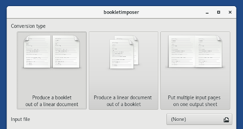
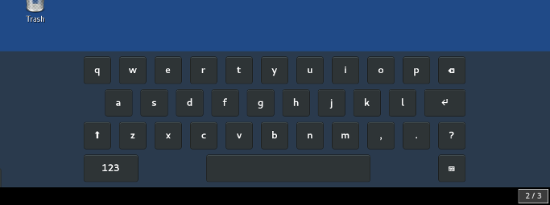
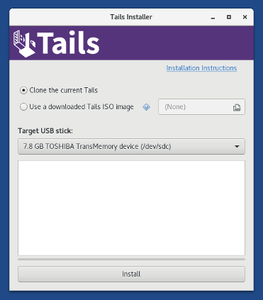

Cette version corrige plusieurs failles de sécurité et la mise à jour doit être faite dès que possible.
Changements
Nouvelles fonctionnalités
Nous avons ajouté le support pour les connexions Internet via modem RTC et PPPoE.
Merci de nous dire si cela ne fonctionne toujours pas pour vous !
Nous avons installé BookletImposer pour convertir au kilomètre les documents PDF en brochures, et vice-versa.

Nous avons ajouté le clavier visuel de GNOME pour remplacer Florence, le précédent clavier virtuel, qui avait beaucoup de problèmes.

Mises à jour et changements
Mise à jour du noyau Linux vers la version 4.12.12. Cela devrait améliorer la compatibilité avec les nouveaux matériels, en particulier les cartes graphiques Nvidia Maxwell.
Mise à jour de Thunderbird de la version 45.8 à la version 52.3.
Expérience d'utilisation
Besoin désormais d'une clé USB de 8 Go pour installer Tails. Les clés USB 4 Go qui sont déjà installées peuvent encore être mises à jour.
Désormais l'Installeur de Tails détecte lorsqu'une clé USB a déjà Tails d'installé, et propose automatiquement de faire une mise à jour. Cela permet de supprimer l'écran de démarrage initial.

Sécurité
Le Bluetooth est désactivé pour se protéger contre l'attaque BlueBorne. #14655
Merci de nous faire savoir si cela rend pour vous l'utilisation de Tails difficile !
Blocage de l'accès au service D-Bus de Pidgin pour empêcher d'autres applications d'accéder et de modifier sa configuration. #14612.
Problèmes corrigés
- Correction de l'import de clés secrètes OpenPGP dans Mots de passe et clés. #12733
Pour plus de détails, lisez notre liste des changements.
Problèmes connus
Aucun spécifique à cette version.
Voir la liste des problèmes connus de longue date.
Obtenir Tails 3.2
Pour l'installer, suivez nos instructions d'installation.
Pour mettre à jour, des mises à jour automatiques sont disponibles depuis les versions 3.0 et 3.1 vers la version 3.2 (mais pas depuis la version 3.0.1 à cause de #13426).
Si vous ne pouvez pas faire une mise à jour automatique ou si le démarrage échoue après une mise à jour automatique, merci d'essayer de faire une mise à jour manuelle.
Et ensuite ?
Tails 3.3 est prévu pour le 14 novembre.
Jetez un œil à notre feuille de route pour savoir ce que nous avons en tête.
Nous avons besoin de votre aide et il y a de nombreuses manières de contribuer à Tails (faire un don est seulement l'une d'entre elles). Venez discuter avec nous !